-apuntes de las clases paso a paso
public class Hi{
public static void main(String[] args) {
System.out.println("Hi MeganHolic, welcome to Java programming!");
System.out.println("Hi MeganHolic, welcome to Java programming!");
System.out.println("Im thunder ");
System.out.println("Im thunder ");
}
}
public class Suma{
public static void main(String[] args) {
int num1 = 7;
int num2 = 770;
int sum = num1 + num2;
System.out.println("la suma de dos numeros " + num1 + " y " + num2 + " es: " + sum);
}
}
480 git remote -v
1 vez
git init : para primera vez para darme noticias sobre mi repositorio o iniciar mi proyecto
gitignore : para no registrar documentos privados Repetitivamente / cada dia
git status : el estado de mi repositorio
git add . : para agregar todo
git add xxx/ . : es para agregar o quitar cambios
git comit -m "(podemos poner mensaje aqui para su cambio guardado)" : nombre que voy a guardar mi archivo
para subir los cambios de la organizacion
git push : enviar todo a mi nube de GitHub
ls -a para llamar a todos los documentos sin restrinciones
cat : es para revisar documentos que esten guardados o destinados a llevar autoguardado.
.md : para crear documentos de texto
Secuencia de pasos a seguir para ser un repositorio totalmente solido y reconstructivo con gitHub con vs code, siendo asi la mayor forma de hacer trabajos y modificaciones en cada prj
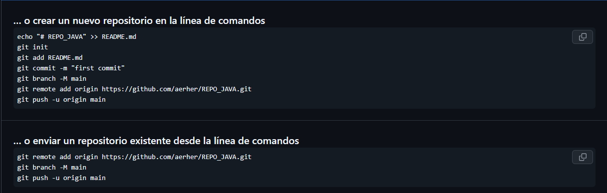
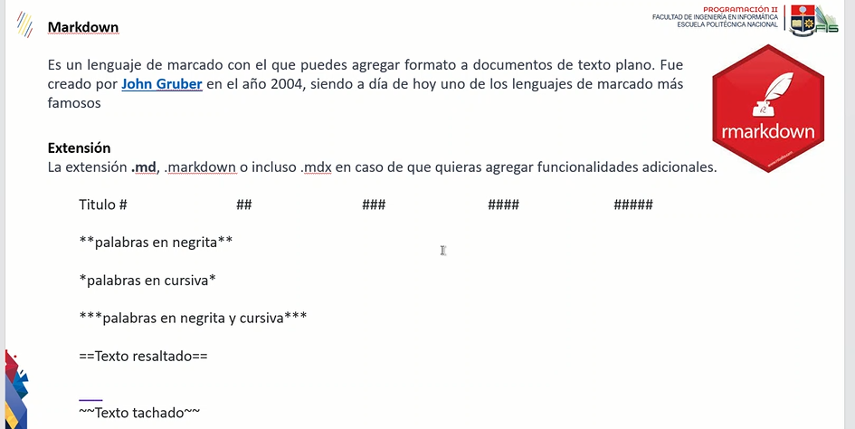
// para registrar para un repositorio
git config --global user.name
git config --global user.email
// para ver la configuracion actual
git config --global --list
// para remover la configuracion local del repositorio
git config --unset user.name
git config --unset user.email
git config --global --unset user.name
git config --global --list
es una de los IDE mas famosos que existe actualmente, que puede requerir para muchos problemas o resolucion de programas como paginas web , aplicaciones, etc. una aplicacion que tiene soporte en todo el mundo, principalmente es un IDE que se orienta en su programacion en objetos. es una buena alternativa para otros IDES que son conocidos como C ++ , etc. donde java si diferencia entre mayusculas y minisculas en cada prj. donde el lenguaje de programacion es utilizado por los humanos para comunicarnos y dar instrucciones a las maquinas
/// nombre del documento siendo un public class
/// TAMBIEN CONOCIDO COMO NUESTRO PUNTO DE ENTRADA O UN PUNTO DE SALIDA
public static void main(String[]args){
}
Modelo de prj en java con sus integraciones y carpetas para un trabajo limpio
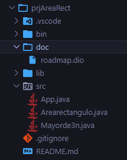
las primeras lineas de codigo como ejm 1 y 2, es para decalaracion de un package o una libreria a llamar, como un import.
public class Main{
public static void main(String[]arg){
system.out.print("Hello ThundeR");
}
}
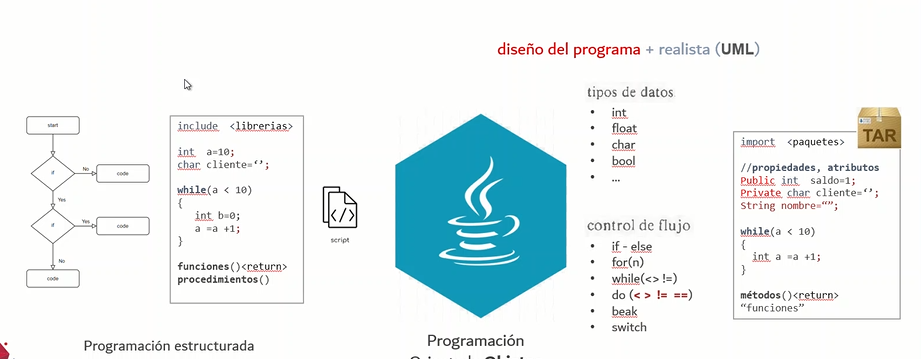
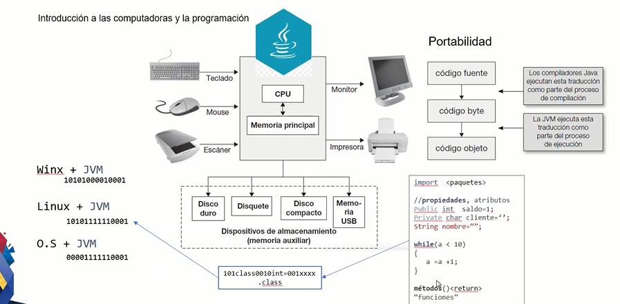
es la forma de como yo entender y plantear una manera de solucion de un conficto, mendiante muchos metodos y codigos. Ejemplo :
Algoritmo (pseudocodigo)
Diagrama de Flujo
Codigo
( Traza) TRace : para pruebas de escritorio
utilizando if, for and else si yo doy un n que va a leer entonces, declaramos lo siguiente :
for ( int n = 9 ){
if (n% 2 == 0) {
system.out.print("+")
}else{
system.out.print("-")
}
}
para un for : donde en for ( declaro una variable que comienza, tener una restriccione que sea menor a mi numero que digite y la forma de como crece esta variable a variar)
int n = 7
for ( int i = 0 ; i < n ; i = i +1 ){
if ( n % 2 == 0 ){
system.out.print("+"){
}else{
system.out.print("-")
}
}
}
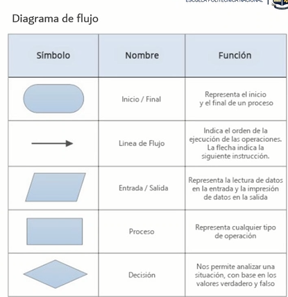
Un diagrama de flujo es para graficar un algoritmo o una estructura en una serie de pasos y vinculados que permiten su revision como un todo del proyecto.
cada figura geometrica representa cada paso puntual del proceso que esta puntuado a evalucacion, que se conectan entre si.
donde su forma de esquematizar sea a travez de un INICIO y un FINAL
donde;
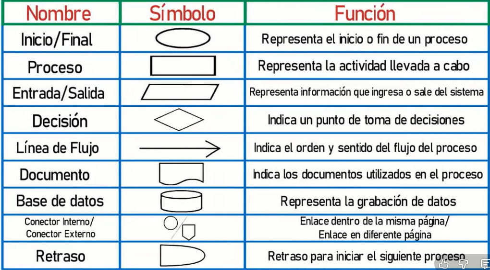
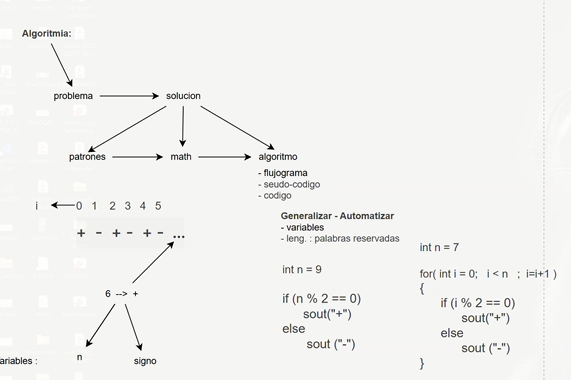
para poder organizar las ideas de mi programa de manera mas grafica y de manera mas practica ;
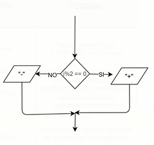
donde tenemos varias clases en un mismo prj, para mayor facilidad de trabajo tenemos un controlador.java que nos ayude a detectar a las demas clases excepto la clase que tenga el main o conocido como el puerto de entrada y salida (public static void)
Para un uso adecuado de clases que forman parte de un proyecto, nosotros necesitamos que alguien guíe o direccione a estos documentos de manera adecuerda y ordenada con finalidad de mantener un repositorio y trabajo ordenado, tambien llamadado la clase "Controlador.java", este nos ayuda a dirigir nuestros documentos de manera logica y coherente, siendo asi en nuestro metodo main sea mas limpio y concreto.
como en este caso, tenemos al metodo Controlador, llamando los metodos de las demas variables al metodo main
public class controlador{
public void ShowSerieCaracterAlterno (int cantidad){
SerieCaracter serie = new SerieCaracter();
System.out.println("Serie de caracteres alternos:");
serie.PresentarSerieCaracterAlterno(8);
}
public void ShowSerieNumerica (int cantidad){
SerieNumerica serie = new SerieNumerica();
System.out.println("\nSerie de numeros alternos:");
serie.MostrarSerieNumerica(8);
}
}
public class SerieNumerica(){
/***
* esta es una forma de documentar con java
*/
// esto sirve para comentar
}
Donde puede ser que tengamos un Main base fuera de los packages, para poder programar tenemos que tener en cada cierta clases lo siguiente estructura:
se reconoce desde el nombre del doc como un temrinacion .java .ipynt
donde se puede reconocer public de forma global donde tiene varias formas
tenemos varios que por las cuales tenemos que algunos que retornan en valor u otros que no lo hacen. los que no retornan valor tambien conocidos los tipo void (parameters){body}
- parametros
<public/protect/private> void NombreMeotodo(){body}
parametros
<public/protect/private> void NombreMetodo(para1,para2, ..) [body]
retorno
<public/protect/private> <TipoDato> NombreMetodo(){body
return <TipoDato>}
retorno con parametro
<public/protect/private> <TipoDato> NombreMetodo (param1 , param2 , param3){
body
return <TipoDato>
}
public void MostrarDato();{
...
}
tenemos los que retornan valor que tambien conocidos como tipo variable (int, doble, String)
public int MostrarDato(){
...
return (variable) int
}
public String MostrarDato(){
...
return String
}
tipo de datos y variables tipo de variables primitivas y las variables llamas por referencia o no primitivas.
las variables primitivas conditions ( nombre de la variable, abreviaciones, no numericos, camelcase) siempre variables primitivas inicial con Minusculas
las variables no-Primitivas (son valores cuya informacion mas extensa, comienza con Mayuscula ) son String,Arrays,Classses,Enums and Records
-primitivas
int
chat
float
-no primitivas
Integer
Char
String
Float
Datatime
Cast or casting : una forma de transformar variables o una forma de coordialidad para cambiar un tipo de variable no comun.
un automata finito deterministico, nos dice que se puede objetener de una serie o de un codigo varias entradas mas no solo una determinada, donde puede a ver varios estados, donde tambien se contempla su alfabeto y sobre todo los estados de inicio y final del automata, que procesa una cadema de simbolos de manera determinada
para mayor interaccion o en la creacion de los AFD de manera digital, podemos realizar mediante el portable JFLAP que nos permite realizar, ya se utilizando todas las caracteristicas ademas como un modelo muy limpio y organizado en obtenerlo.
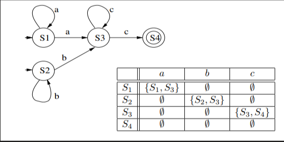
Otra PC:
PC de casa:
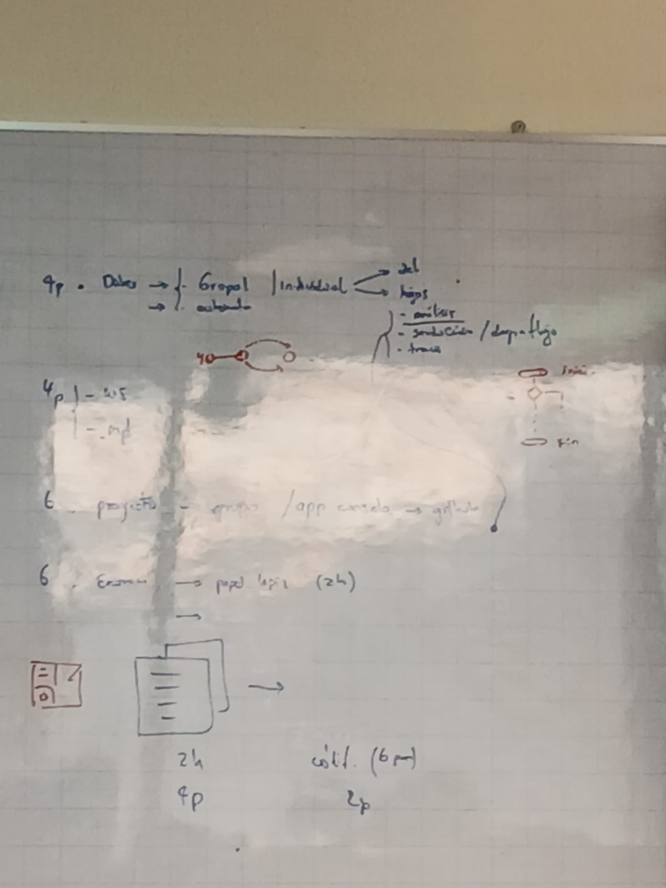